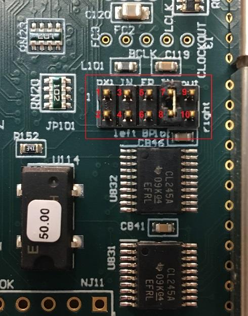
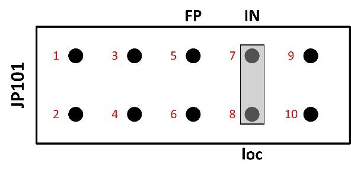
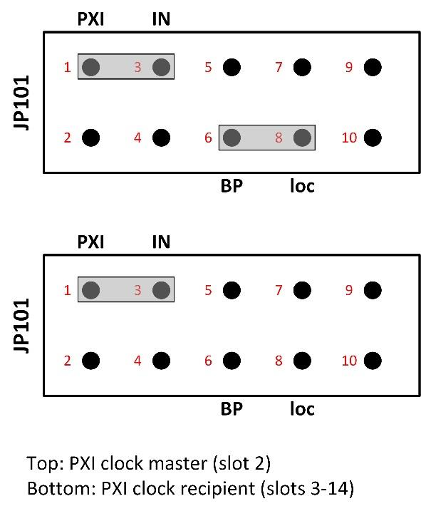
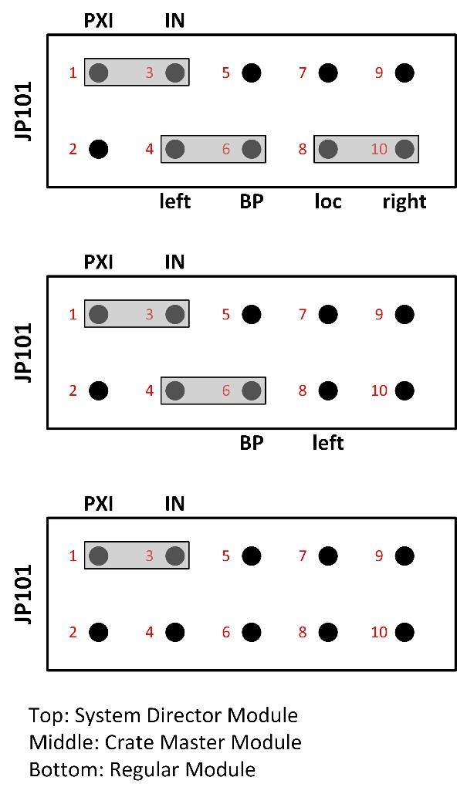
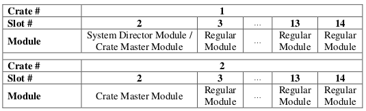
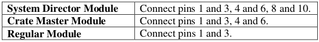
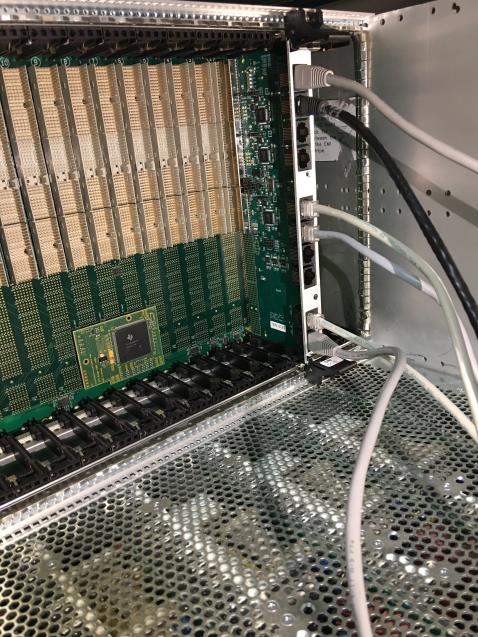
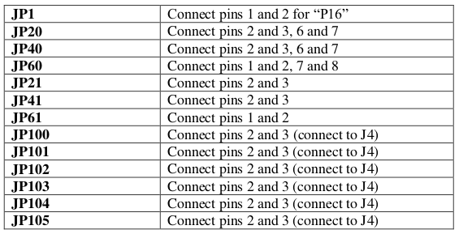
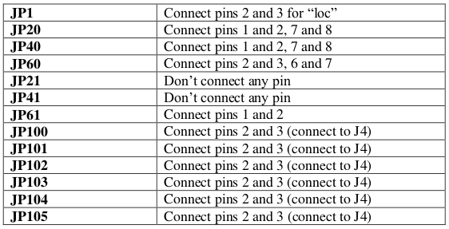
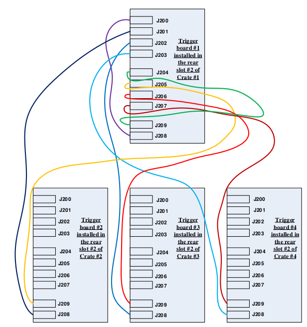

Multiple Modules Synchronously¶
When many Pixie-16 modules are operated together as a system, it may be required to synchronize clocks and timers between them and to distribute triggers across modules. It will also be necessary to ensure that runs are started and stopped synchronously in all modules. All these signals are distributed through the PXI backplane of the Pixie-16 crate.
In a multi-module system there will be one clock master and a number of clock slaves or repeaters. The clock function of a module can be selected by setting shunts on Jumper JP101 near the bottom right corner of the board. The 10-pin Jumper JP101 is shown in the picture on the top with those pins labelled in red color. Shunts are provided to connect pins that are appropriate for each chosen clock distribution mode. Four clock distribution modes, individual clock mode, PXI clock mode, daisy-chained clock mode, and multi- crate clock mode, are described below.
警告
In 250 MHz or 500 MHz Pixie-16 modules, the frequency of signal processing clock in the FPGA has been divided down to either 125 MHz or 100 MHz, respectively, for more practical implementation of the design. That division might result in different clock phase and thus different timestamp offset for each channel within a given 250 MHz or 500 MHz Pixie-16 module whenever the module is reinitialized. Calibration might be needed to quantify the different timestamp offset for each channel.
Individual Clock Mode¶
If only one Pixie-16 module is used in the system, or if clocks between modules do not need to be synchronized, the module(s) should be set into individual clock mode. Connect pin 7 of JP101 (the clock input) with a shunt to pin 8 (loc – IN). This will use the 50 MHz local crystal oscillator of the Pixie-16 module as the clock source.
PXI Clock Mode¶
The preferred way to distribute clocks among multiple Pixie-16 modules is to use the PXI clock distributed on the backplane. This clock is by default generated on the backplane and is a 10MHz clock signal, which is then repeated by a fan out buffer and connected to each crate slot by a dedicated line with minimum skew(equal trace length to each slot). Although the 10MHz is too slow to be a useful clock for the Pixie-16, it can be overridden by a local clock signal from a Pixie-16 module that is installed in slot 2 through proper shunt settings on the JP101.
A Pixie-16 module can be configured to be the PXI clock master in slot 2 by connecting pins 6 and 8 (loc – BP) of the JP101. All modules, including the clock master, should be set to receive the PXI clock by connecting pin 1 and 3 on JP101 (PXI – IN). In this way, the 50 MHz clock from the Pixie-16 clock master is distributed to all Pixie-16 modules through the backplane with nearly identical clock phase.
One other advantage of the PXI clock mode over the daisy-chained clock mode, which will be discussed next, is that except for the Pixie-16 master module, which has to be installed in slot 2, other Pixie-16 slave modules can be installed in any other slot of the Pixie-16 crate. In contrast, when the daisy-chained clock mode is used, all Pixie-16 modules have to be installed next to each other, i.e. no gap is allowed between modules.
Daisy-chained Clock Mode¶

A further option for clock distribution is to daisy-chain the clocks from one module to the other, with each module repeating the clock signal and transmitting it to the neighbor on the right. This requires one master module, located in the leftmost slot of the group of Pixie-16 modules. The master module uses its local crystal oscillator as the input and sends its output to the right (loc – IN, out – right). Other Pixie-16 modules in the crate should be configured as clock repeaters by using the signal from the left neighbor as the input and sending its output to the right (left – IN, out – right). However, as mentioned earlier, there must be no slot gap between modules.
Multi-Crate Clock Mode¶
In multi- crate systems, a global clock signal can be distributed among these crates using dedicated trigger and clock distribution cards, i.e. the Pixie-16 Rear I/O trigger modules, which are available from XIA.
An example of clock distribution between two crates is illustrated below.
Installation of Pixie-16 Modules¶
Multiple Pixie-16 modules can be installed in two 14-slot Pixie-16 crates, #1 and #2. For clock distribution purpose, crate #1 is called the Master crate, where the system-wide global clock for all Pixie-16 modules is originated, and crate #2 is called the Slave crate, which receives the global clock from the Master crate.
The Pixie-16 module installed in slot 2 of the Master crate is designated as the System Director Module, whose local 50 MHz crystal oscillator acts as the source of the system-wide global clock. The distribution of the clock signal from the System Director Module to all Pixie-16 modules in the 2-crate system is done through the Pixie-16 Rear I/O trigger modules.
The Pixie-16 module installed in slot 2 of the Slave crate is called the crate Master module, which is responsible for receiving the global clock from the Master crate and sending such clock to all modules in that crate through length-matched traces on the backplane. The System Director Module is also responsible for sending the global clock to all modules in the Master crate. Therefore, it is also a crate Master module. Other modules in these two crates are regular modules. Table shows the different types of modules in a 2-crate system.
Clock Jumper (JP101) Settings on the Pixie-16 Modules¶
For all Pixie-16 modules in a 2-crate system to use the same global clock signal, the clock jumper (JP101) in all modules should be set according to Table Clock Jumper JP101 Settings in a 2-crate System and Figure multi-crate clock mode.
Cable Connections for Pixie-16 Rear I/O Trigger Modules¶
The Pixie-16 Rear I/O trigger modules are installed at the rear side of each crate where a 6U card cage is installed. Figure rear I/O trigger modules shows a Pixie-16 Rear I/O trigger module is installed directly behind either the Director or the Master module, respectively, to share clock, triggers, and run start or stop synchronization signals among multiple Pixie-16 crates. The rear of the backplane has connectors J3, J4 and J5, but it does not have J1 and J2, since it does not need to use CompactPCI or PXI communication.
Typically the first slot at the rear of the backplane with J3, J4, J5 connectors installed is the slot where the Pixie-16 Rear I/O trigger module should be installed. While installing the module, please ensure the alignment of top and bottom rails with the trigger module to avoid damage to the backplane pins.
Figure Cable connections between two Pixie-16 rear I/O trigger modules shows the cable connections between two Pixie-16 rear I/O trigger modules that are installed in two separate crates. All connection cables are Category 5 or 6 Ethernet cables and shall have the same length to minimize clock phase difference between Pixie-16 modules in the two crates.

Jumper Settings on the Pixie-16 Rear I/O Trigger Modules¶
Trigger module #1 is installed in the rear slot #2 of crate #1. As mentioned earlier, the rear slot #2 is located at the back of the crate and is at the direct opposite side of the front slot #2 of the crate. Care should be taken when installing the trigger module into the rear slot #2 by avoiding bending any pins of the rear side of the backplane, since that could cause the 3.3V pin to be shorted to neighboring ground pin and thus damage the whole backplane.
Please note pin numbering for all jumpers on the trigger module is counted from right to left when facing the top side of the module, i.e. the backplane connectors J3 to J5 are on the left (only exception is JP1, which is in vertical orientation and should be counted from bottom to top). A tiny ‘1’ label is painted on the right hand side of the jumpers, indicating pin 1. Figure Pin numbering for the jumpers on the Pixie-16 rear I/O trigger module shows the pin ‘1’ in red boxes.

Table Rear I/O Trigger Module #1’s Jumper Settings shows the jumper settings of the Pixie-16 rear I/O trigger module #1 in a 2-crate system.
Trigger module #2 is installed in the rear slot #2 of crate #2. Table Rear I/O Trigger Module #2’s Jumper Settings shows the jumper settings of the Pixie-16 rear I/O trigger module #2 in a 2-crate system.
 Please note, if there are a total of four crates, the cable connections among those four Pixie-16 rear I/O trigger modules that are installed in those four separate crates should follow the connection methods shown in Figure. For the jumper settings on the Pixie-16 rear I/O trigger modules, trigger module #1 and #2 should use the same jumper settings as those in the trigger module #1 and #2 of the 2-crate system, respectively, whereas trigger module #3 and #4 should use the same jumper settings as those in trigger module #2.